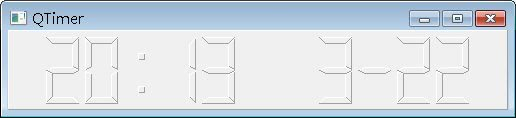

Qt中的QTimer會定時發出QTimerEvent事件，您可以設定一個接受QTimerEvent的函式來接收這個事件，一旦接收到QTimerEvent事件，函式的內容就會被執行，例如接下來的範例，將設計一個數位時鐘，可以顯示目前時間與日期。
數位時鐘的顯示將使用QLCDNumber，這邊直接繼承QLCDNumber來實作：
- DigitalClock.h
#ifndef DIGITALCLOCK_H
#define DIGITALCLOCK_H
#include <QLCDNumber>
class DigitalClock : public QLCDNumber {
public:
DigitalClock(QWidget *parent=0);
protected:
void timerEvent(QTimerEvent *);
private:
bool isColon;
};
#endif在DigitalClock中，重新定義了timerEvent()來接受TimerEvent，以定時接受QTimer的事件並進行時間的擷取與顯示更新，DigitalClock實作如下：
- DigitalClock.cpp
#include "DigitalClock.h"
#include <QDateTime>
DigitalClock::DigitalClock(QWidget *parent) : QLCDNumber(parent) {
this->isColon = false;
this->setFrameStyle(QFrame::Panel | QFrame::Raised);
this->setNumDigits(11);
QObject::startTimer(500);
}
void DigitalClock::timerEvent(QTimerEvent *e) {
isColon = !isColon;
QString timeString = QTime::currentTime().toString().left(5);
QDate date = QDate::currentDate();
QString dateString;
dateString.sprintf( " %2d-%2d", date.month(), date.day());
QString displayString = timeString + dateString;
if (!isColon) {
displayString[2] = ' ';
}
display(displayString);
}QTimer的啟動是使用QObject::startTimer(500)，如果想停止QTimer，則使用QTimer::killTimer()，500的單位是毫秒，這邊每0.5秒發出一次事件，每次timerEvent()接受到QTimerEvent事件時，會擷取目前的時間與日期，每0.5秒處理一次是為了處理冒號的顯示，這是由timerEvent()中if判斷式來負責。
撰寫一個主程式來看看這個元件是否運作正常：
- main.cpp
#include "DigitalClock.h"
#include <QApplication>
int main(int argc, char *argv[]) {
QApplication app(argc, argv);
DigitalClock *digitalClock = new DigitalClock;
digitalClock->resize(500, 80);
digitalClock->setWindowTitle("QTimer");
digitalClock->show();
return app.exec();
}執行的結果畫面如下所示：
